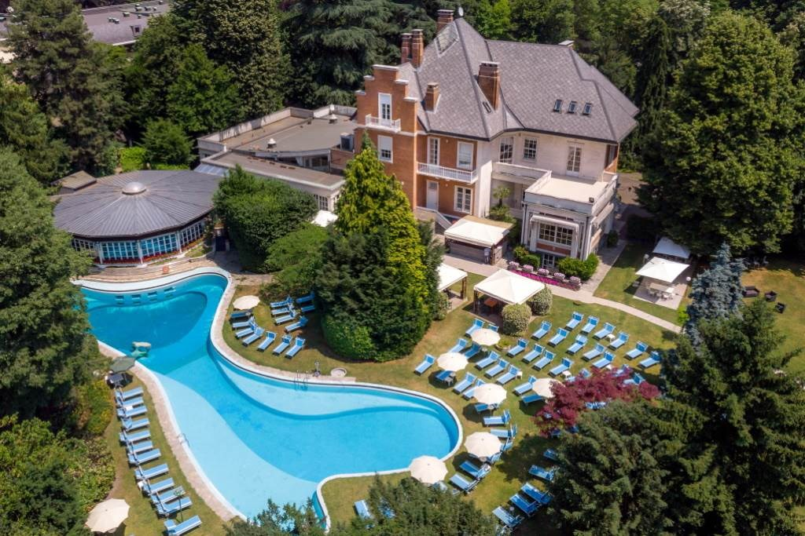
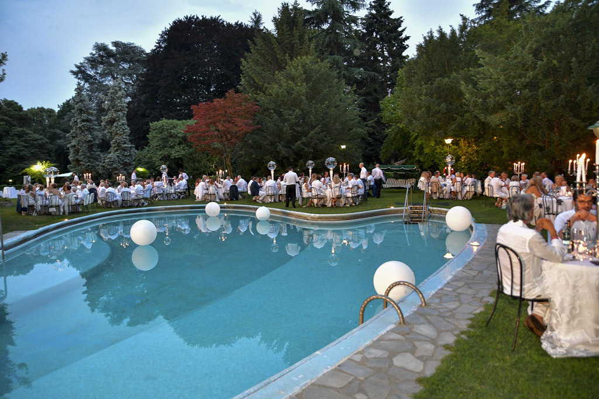
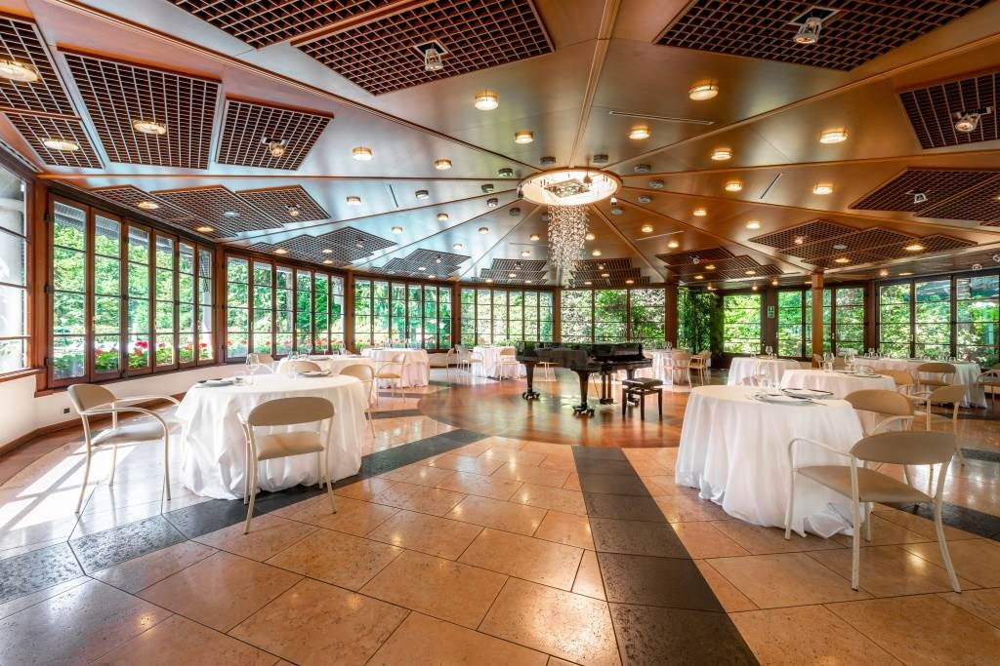
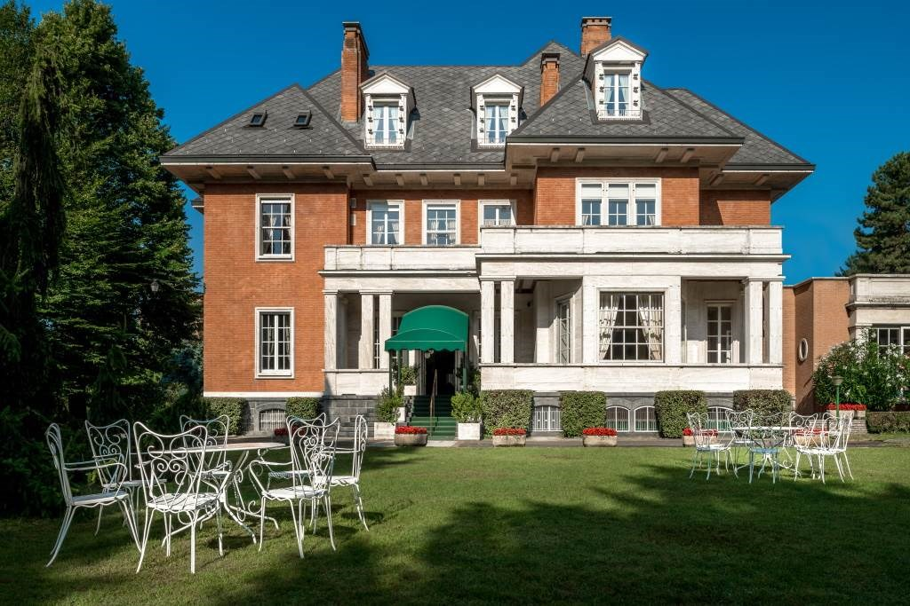
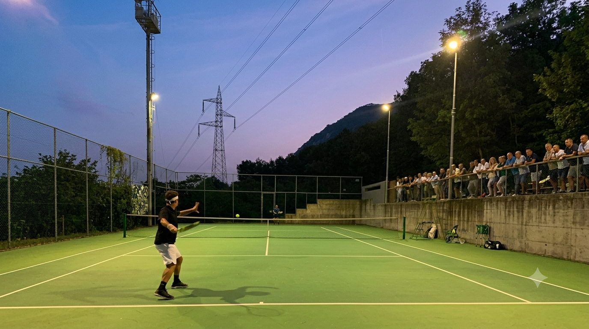

A pochi passi dal Parco della Villa Reale di Monza, nel cuore della Brianza e a pochi chilometri da Milano, lo Sporting Club Monza rappresenta un'oasi verde di 22.000 metri quadrati. Alberi secolari e aiuole verdi incorniciano la Villa, un edificio degli anni '20 in stile “country house” inglese. L'edificio combina la monumentalità esterna di una prestigiosa villa di lusso con una dimensione più “domestica” degli ambienti interni, raffinati ma anche intimi e confortevoli. Gli ambienti della Villa sono ideali sia per le attività ricreative che per gli eventi di business: sale per conferenze e meeting, bar interno ed esterno, sala da biliardo, area bambini, sala televisione, salone per grandi eventi. Tutte le sale sono in grado di soddisfare ogni esigenza tecnologica. L'intera struttura è dotata di rete WiFi. Per gli amanti dello sport, lo Sporting Club Monza offre due campi da tennis e due palestre. D'inverno inoltre è possibile usufruire della sauna. La piscina scoperta, aperta ovviamente d'estate, riscaldata e lunga 30 metri, rappresenta il fiore all'occhiello della struttura. Un luogo eccezionale per rinfrescarsi durante un pomeriggio caldo o rilassarsi durante la prima serata. Affacciato verso la piscina, in una splendida rotonda verandata, vi è il ristorante che con i suoi 80 coperti offre ogni settimana un menù diverso con una scelta di piatti semplici, ma curati, realizzati con prodotti di altissima qualità. Durante l'anno importanti eventi sociali, anche di carattere culturale, musicale e grandi feste arricchiscono l'esperienza fornita ai nostri membri.




Il Centro Sportivo Fonas dispone di due campi polivalenti da tennis/calcetto coperti, un campo polivalente tennis/calcetto scoperto e due campi da padel. Il centro vanta anche di un ristorante-pizzeria e di un bar. Attualmente i tesserati dell'associazione sono circa 150.
